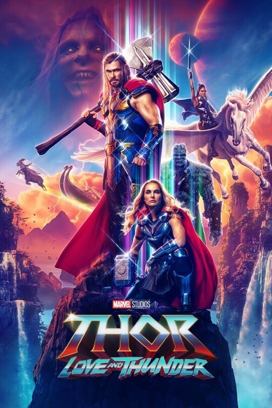

l personaggio di Thor si ispira alla mitologia del Nord Europa e corrisponde al dio del Tuono, figlio di Odino e Gea ed erede al trono di Asgard. Thor è il figlio del padre degli dei di Asgard, Odino e dello spirito della Terra Jord (avatar di Gea). L'obiettivo di Odino era quello di avere un figlio che avesse dei poteri non derivanti esclusivamente dalla patria degli dei celesti. Così Odino creò una caverna in Norvegia, dove Jord diede alla luce Thor.
marvel
